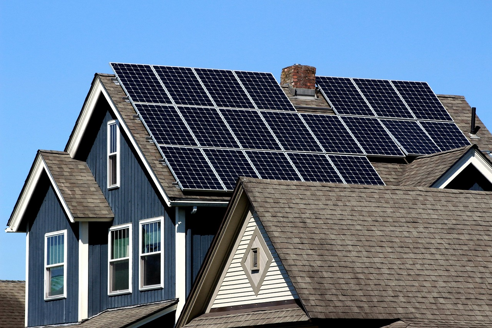

En esta tarea realizamos un recorrido por las Torres de Cotillas, apuntamos el número de placas solares que vimos, las barreras arquitectónicas y los contenedores. El resultado de nuestra investigación se puede ver en este archivo. 